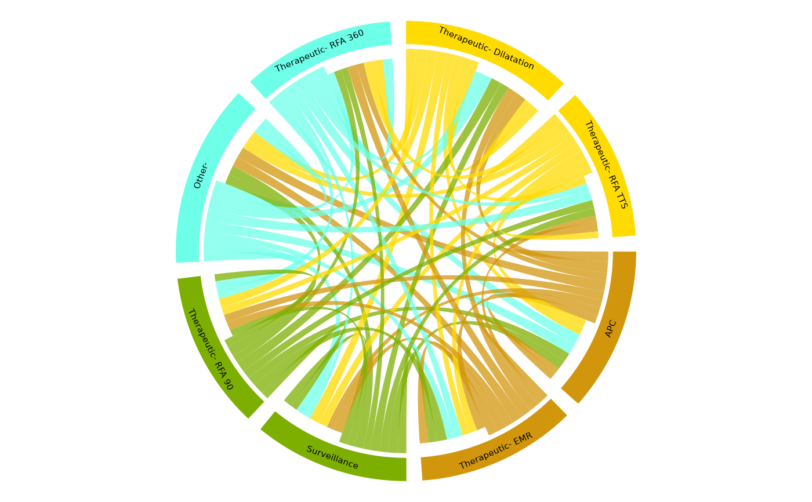

This allows us to look at the overall flow from one type of procedure to another using circos plots. A good example of it's use might be to see how patients move from one state (e.g. having an EMR), to another state (e.g. undergoing RFA)
PatientFlow_CircosPlots( dataframe, Endo_ResultPerformed, HospNum_Id, ProcPerformed )
Arguments
| dataframe | dataframe |
|---|---|
| Endo_ResultPerformed | the column containing the date of the procedure |
| HospNum_Id | Column with the patient's unique hospital number |
| ProcPerformed | The procedure that you want to plot (eg EMR, radiofrequency ablation for Barrett's but can be any dscription of a procedure you desire) |
Examples
# This function builds a circos plot which gives a more aggregated # overview of how patients flow from one state to another than the # SurveySankey function # Build a list of procedures Event <- list( x1 = "Therapeutic- Dilatation", x2 = "Other-", x3 = "Surveillance", x4 = "APC", x5 = "Therapeutic- RFA TTS", x5 = "Therapeutic- RFA 90", x6 = "Therapeutic- EMR", x7 = "Therapeutic- RFA 360" ) EndoEvent <- replicate(2000, sample(Event, 1, replace = FALSE)) # Merge the list with the Myendo dataframe fff <- unlist(EndoEvent) fff <- data.frame(fff) names(fff) <- "col1" Myendo$EndoEvent<-fff$col1 names(Myendo)[names(Myendo) == "HospitalNumber"] <- "PatientID" names(Myendo)[names(Myendo) == "fff$col1"] <- "EndoEvent" # Myendo$EndoEvent<-as.character(Myendo$EndoEvent) # Run the function using the procedure information (the date of the # procedure, the Event type and the individual patient IDs) hh <- PatientFlow_CircosPlots(Myendo, "Dateofprocedure", "PatientID", "EndoEvent")#>#>